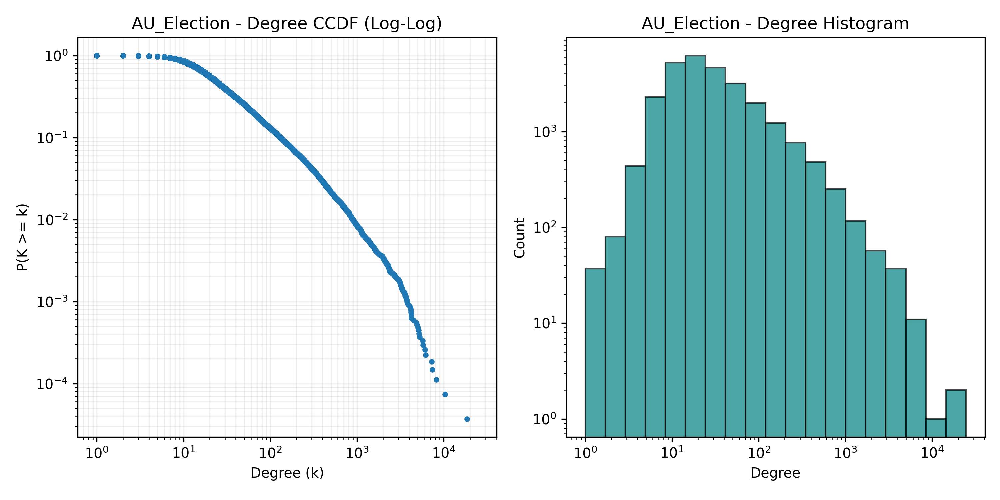
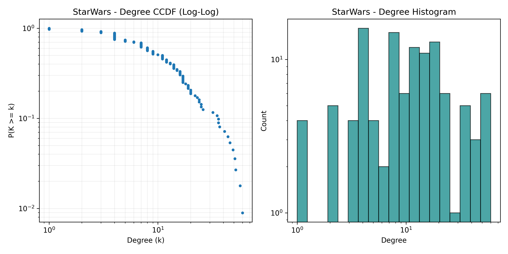
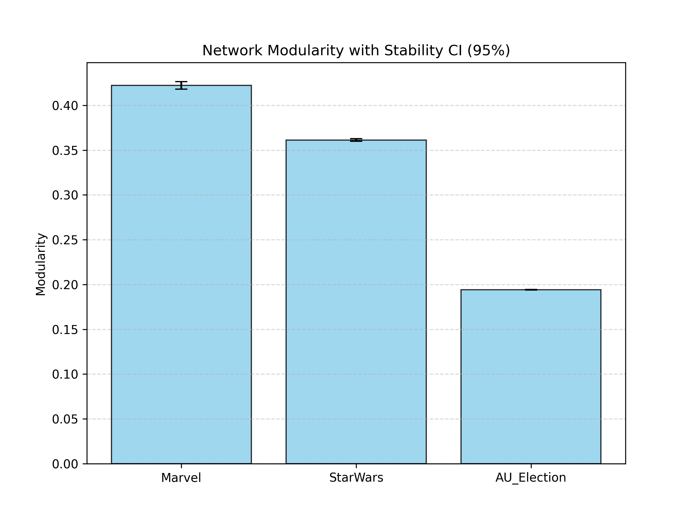
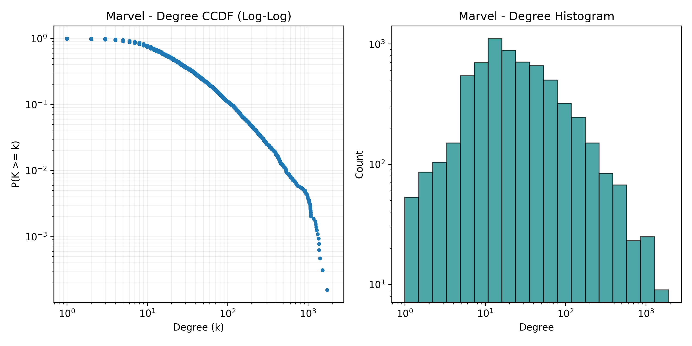

🔬 Sosyal Ağ Analizi Raporları
Otomatik NLP ve Ağ Bilimi Analiz Sonuçları
Güncellendi: 07.02.2026 23:34:39
Analiz: 07.02.2026 - 21:41
Results_20260207_2141
📊 Temel Metrikler
Metrik dosyası bulunamadı.
📈 Grafik Galerisi

Fig Ccdf Degree Au Election

Fig Ccdf Degree Marvel

Fig Ccdf Degree Starwars

Fig Modularity Stability
Analiz: 07.02.2026 - 21:21
Results_20260207_2121
📊 Temel Metrikler
Metrik dosyası bulunamadı.
📈 Grafik Galerisi

Fig Ccdf Degree Au Election

Fig Ccdf Degree Marvel

Fig Ccdf Degree Starwars

Fig Modularity Stability